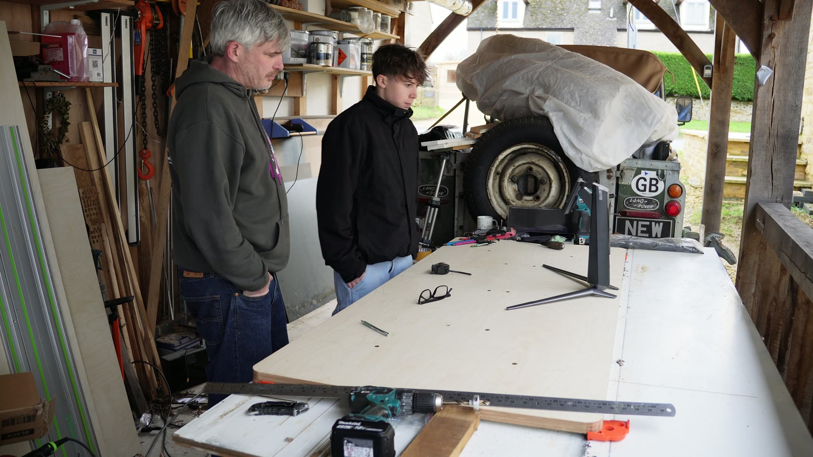
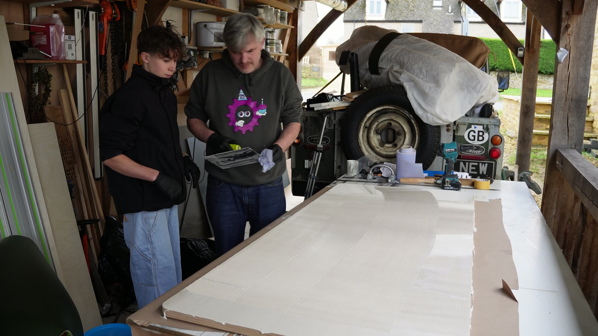
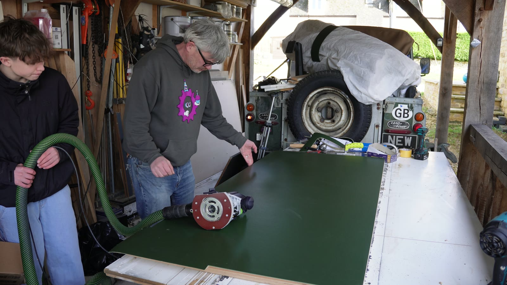
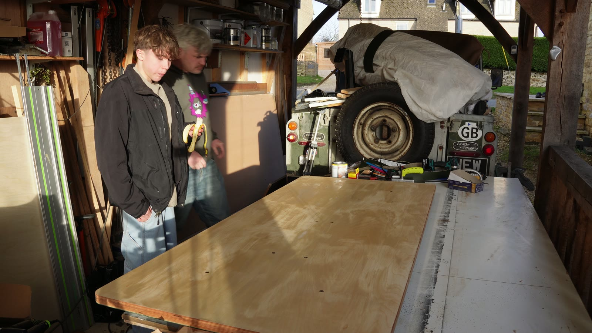
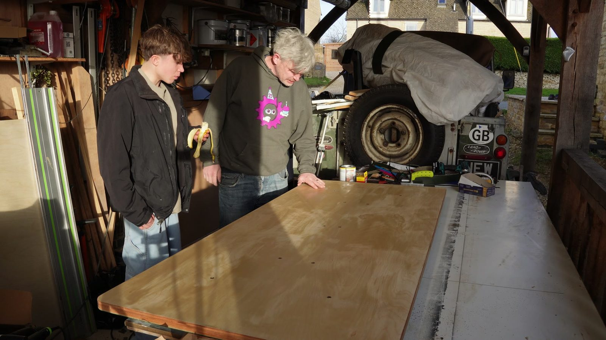

Timber top
Woodwork / standing desk / family workshop
Motorised Standing Desk
Height-adjustable desk.

- Timber
- 32mm plywood, with laminate flooring glued down as the working surface. It sounds like a bodge and it is the best part of the desk: hard, warm to the hand, and it takes a knock.
- Top dimensions
- 1800mm by 800mm, with curved corners. Big enough for a very large monitor, which is most of the point.
- Lifting frame
- A bought Desktronic dual-motor frame kit. No shame in buying the bit that is a solved problem, and it is really good.
- Joinery
- Curves cut with a jigsaw and cleaned up with a sander. The laminate went down first and was trimmed flush afterwards with a router.
- Finish
- Ply edge left visible and lacquered, which looks far better than lipping it would have. Underside sealed too, so it stays flat.
- Build time
- About three hours, end to end.
What went wrong
Nothing. Three hours, no drama, a desk at the end of it. Buying the frame is why — all the difficulty in a sit-stand desk lives in the mechanism, and the mechanism was somebody else’s problem.
The version I nearly built
I did sketch the dafter version first: four lifting points, a heavy glass or concrete top, proper cable routing, programmable heights, and the question of whether to link the legs mechanically with belts, screws and one motor. That would have been a much more interesting machine. It would also have made this a month-long desk project instead of an afternoon with my son.
What I would change
Nothing. It was an afternoon in the workshop with my son that produced a desk I still use.
Build footage
Building the top
Checking the frame, marking out the top, working the alignment. This is where you find out how far out of square the frame really is.
Frame layout
Getting the base honest
Tabletop
Working the big flat bit
Motion test
The satisfying bit
The build
Why build one at all
I like things that have to survive daily use. Half furniture making, half fitting a motorised frame to a top heavy enough to need it, still working after a thousand cycles.
The choice
Buying the hard bit
The original spec got silly quite quickly: 1600mm-plus top, up to 250kg dynamic load if I went concrete, four-post lifting, synchronous control, racking, crush protection, cable trays. Fun problems, but not the point of this one. The point was making a desk together, so I bought the lift and made the top.
The best bit
Building with my son
Desk is fine. Getting my son involved in building 'real things away from the virtual world' - awesome.






